🏙️ Is Nagoya Boring?
Recently, it seems like everyone I talk to is either visiting or returning from Japan. This isn’t just my observation - according to multiple sources, Japan’s post-covid tourism numbers are through the roof. While many plan their trips around the glitz and glamor of Tokyo or the rich culture of Kyoto, there’s another city that I’ve yet to see on any itinerary - Nagoya.
Despite being it’s third largest metro area, Nagoya is nationally renowned as “Japan’s most boring city”. A famous poll found that even Nagoya’s locals think Tokyo and Kyoto are “more appealing” than their own hometown. But is this a fair assessment? Is Nagoya really that boring? I spent three months as an expat in Nagoya with the goal of finding out. So join me in this half-article, half-guidebook as we weigh in on whether Nagoya deserves it’s ho-hum reputation.
Nagoya Station Area / Toyota Industry Museum
Nagoya Station will likely be your gateway to Nagoya proper, so it’s probably the best place to start this guide. There’s already a lot to do right next to the station! I’ve summarized these locations in a Nagoya Station area Google maps guide.
Nagoya Station
Nagoya Station’s Gold Clock
Nagoya Station’s Silver Clock (ft. my copycat Seiko)
If you’re at the gold clock, one of my favorite views of the whole city is just a few steps away. If you ride the Gate Tower elevator to the 15th floor, you’ll stumble upon an airy rooftop terrace with a view of the whole city. It’s a great place to relax after a long train ride. There’s a Starbucks attached to the terrace - If you get the Nagoya “been there” mug as a souvenir, they’ll give you a free drink!
The view from the Starbucks Gate Tower terrace (image credit)
Nana-chan’s watermelon-smashing fit
Before leaving the station, be sure to check out Nana-chan the 18-foot tall statue! Her dress changes to fit the current season - when I was there last June, she sported a summery watermelon getup. There’s a fair amount of Nana-chan lore, too! According to official (sounding) sources, she was born in Switzerland on April 28, 1973, and has a blood type of A-positive. Huh.
If you like your shopping chaotic, I’ve got just the place for you - Village Vanguard “exciting bookstore”. Entering Village Vanguard immediately assaults all of your senses: anime music blares from bluetooth speakers, and narrow aisles overflow with precarious stacks of plushes. While technically a “bookstore”, Village Vanguard is a one-stop shop for character goods (i.e. Ghibli, Mario, Minions), manga, knockoff streetwear, Japanese snacks, stationary… You get the idea. It’s worth a visit even if you’re not planning on buying!
One of the more organized aisles in Village Vanguard. (image credit)
Toyota Industry Museum
Most tourists don’t interact much with the industrial history of Japan, which is a shame because it’s really cool! If you want a front-seat into Japan’s development from rural backwater to industrial juggernaut, look no further than The Toyota Commemorative Museum of Industry and Technology! It’s chock-full of interactive exhibits and machines straight from the factory floor, making you a participant in Toyota’s industrial evolution from tiny textile firm to automotive megacorp.
Toyota hybrid development, told via Manga
The grand finale is a whole vehicle production line, motorized to assemble a car right in front of you! Then you get to run a mini-production line and injection-mold your own toy Toyota! If you have a mechanical bone in your body, this is a must-visit.
Finally, there’s a showroom of Toyota’s automotive “greatest hits”. I hear they’ll even fire up the cars for visitors that ask nicely.
| 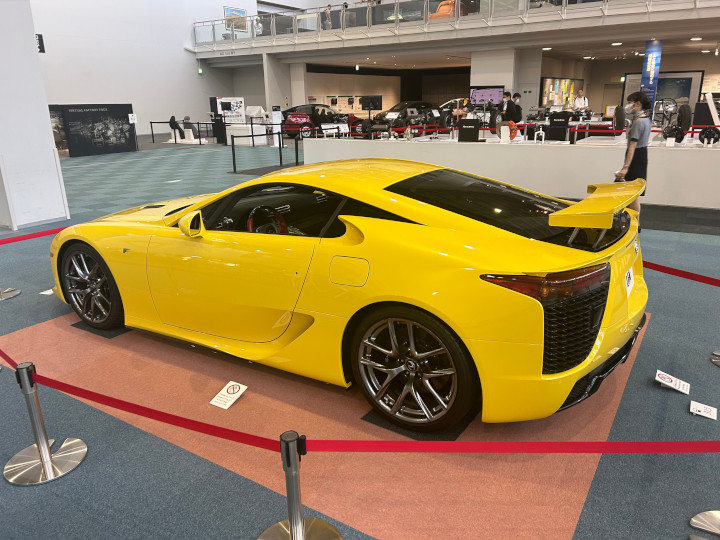 | 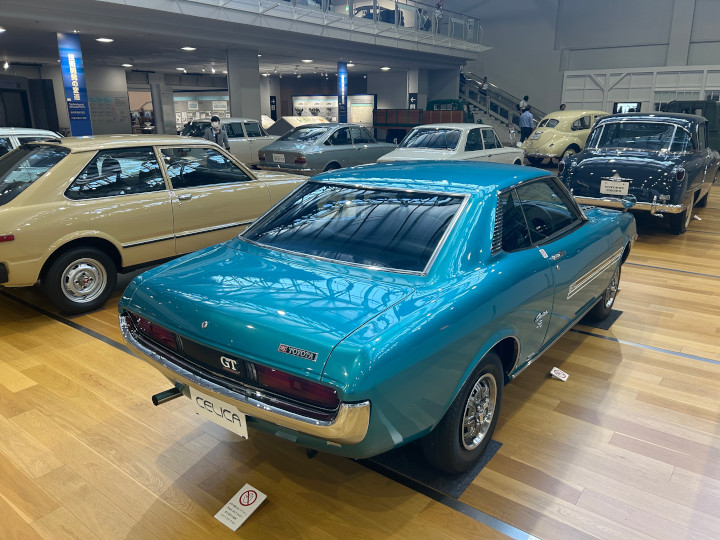 | 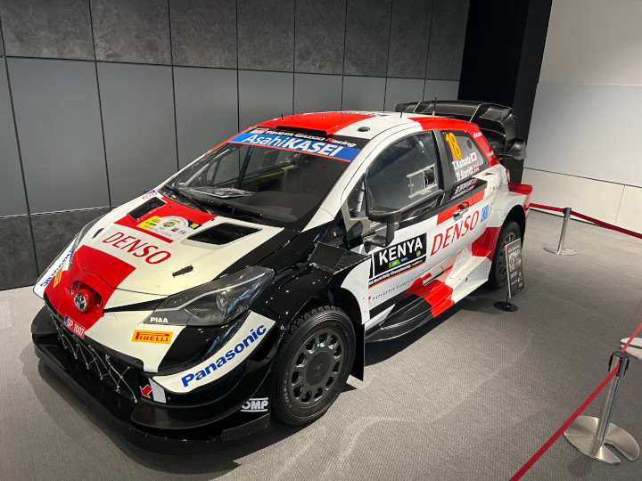 |
|---|---|---|
| Lexus LFA | Toyota Celica | GR Yaris (WRC car) |
I enjoyed the factory without a tour, but in hindsight I’d check out the English-speaking tours to really make the most of being there. While you’re in the area, check out the Noritake Garden - it’s another former factory, transformed into a serene urban garden.
No caption I could write will do this robot band justice.
Nagoya Station Food
There are plenty of places to eat in and around Nagoya Station. Here are some of my favorites, and a link to the aforementioned Nagoya Station area Google maps guide.
- Shinya Ramen
- Look no further for authentic, no-frills ramen. There are only three things on the menu, and they’re all some permutation of rich broth, thick noodles, and flavorful pork!
- Masamune Fish
- Right next to Nagoya Station, this place has some great sashimi. If you come later at night, it’s much more of an izakaya (pub) vibe, with beer and sake aplenty.
- Tsukemen TETSU
- Tsukemen tastes a lot like Ramen, but with more concentrated broth to dip noodles and pork into. Tsukemen Tetsu in Nagoya station was always packed, and for good reason! It’s right next to the Starbucks overlook, so they pair well together.
- The Tower Tavern
- Sometimes, nothing hits quite like a burger. Not a Samurai Mac or a Burger King abomination, just a normal, 100% beef hamburger. The Tower Tavern was my go-to in times like these.
- Gaburi Chicken
- Founded in Nagoya, this fried chicken restaurant is famous for its massive portion sizes and beer pairings.
- Sako Station Vending Machine
- This subway station is noteworthy because it was the only place I could consistently find canned Dr. Pepper. The more you know!
Downtown Nagoya (Nagoya Castle and Sakae)
If you’ve been to other Japanese cities, you’ll immediately notice a different vibe in Nagoya’s downtown. Here’s the downtown Nagoya Google maps guide, so you can follow along!
Nagoya Castle
Nagoya castle. In the Edo period, a thief apparently stole the golden Shachihoko statues using a giant kite. Unknown whether this is legend or fact.
Nagoya Castle and the surrounding grounds are so gorgeous, it’s hard to believe it was once a cutting-edge fortification. The flowering, tree-lined moats were to slow opposing forces, and the castle’s coppery green hue comes from it’s flame-resistant roofing. Even the gold Shachihoko (tiger-fish) statues, now a priceless symbol of Nagoya, would be re-cast into coins if money became tight. Samurai still roam the castle grounds today, but they’re more the “take your picture for 100 yen” type.
As of my most recent visit, (Summer 2024) the castle itself is closed for an extremely ambitious project - to rebuild it from scratch, using only materials and techniques from the castle’s original time period. Though the castle is closed for now, the Hommaru Palace next door is still one of the most stunning pieces of traditional architecture in Japan. Hommaru is home to some amazing artwork and some pretty interesting quirks. Hommaru was the shogun’s personal headquarters, so every room other than his is set at a lower elevation to show subordination. Not low enough - at 6'4 I definitely had a few close encounters with exquisitely crafted doorframes.
| 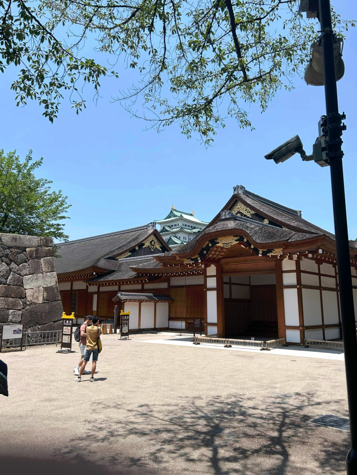 | 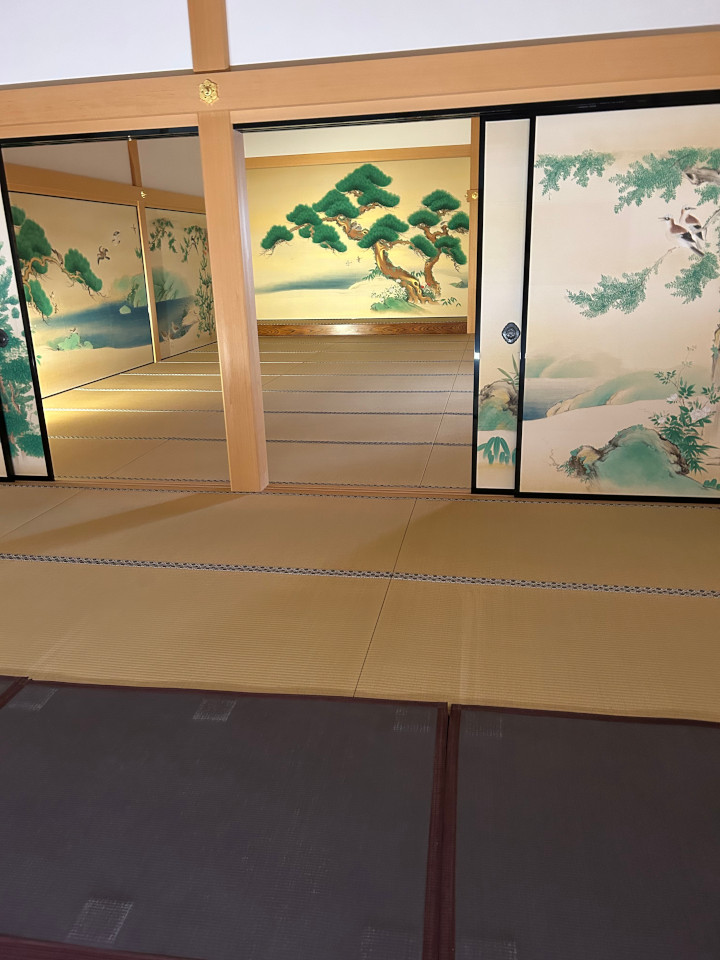 |
|---|---|
| Hommaru Palace (ft. Nagoya Castle) | Hommaru Palace Interior |
There’s also an outdoor dining area near Nagoya Castle. At Fujuyama 55; you can munch Mazesoba (brothless ramen with extra beef) with a great view of the castle itself. Japanese shaved ice (kakigori) also goes great with Nagoya’s hot summer days!
Sakae
Sakae as seen from Oasis 21
If you’re a chronic shopper or just love hustle and bustle, Sakae is your place. But Sakae is actually pretty unusual as far as Japanese downtowns go. Aboveground, there’s a vibrant park spanning four city blocks. Hisaya-Odori park is dominated by Japan’s oldest TV tower (and newest hotel), the Chubu Electric Mirai Tower. Non-guests can take an elevator to the top, but don’t waste your money - my favorite view is right next door! Head over to the top of Oasis 21, and take in the view from the Spaceship Aqua platform. The massive fountain spanning the length of the building isn’t just artistic - it actually cools the open-air shopping mall directly below!
Oasis 21 from below.
Speaking of shops, where are they? A simple question with a surprisingly historic answer. Like other cities in Japan, Nagoya was pretty much leveled by firebombs in WWII. But unlike the other cities, automotive companies (like Toyota!) had some serious influence on the reconstruction effort. As a result, Nagoya was rebuilt from the ground up with vehicle traffic in mind. Since cars and people don’t mix, a majority of the shops moved underground, into Japan’s oldest chikagai (underground shopping center)!
Sakae’s underground Crystal Plaza (image credit)
While some may be quick to dismiss Sakae’s underground shopping mall as car-pandering urbanism, it’s actually pretty effective! Sakae is well-connected to Nagoya’s extensive subway and bus system, and offers an air-conditioned respite from Aichi’s hot, humid summers. It’s just another way Nagoya zigs when other Japanese cities zag.1
Here are a few of my favorite stores to visit in Sakae:
- Book-Off Super Bazaar
- Book-Off is Japan’s premier used books, games, and music store - but Nagoya’s Super Bazaar throws musical instruments, clothing, jewelry, and toys into the mix. Most used products from Japan are still in pretty good condition, and you can find a lot of retro games and rare records for discount prices!
- Tower Records
- Long-dead stateside, Tower Records still thrives in physical-media obsessed Japan. I was surprised at the depth of selection: Kikagaku Moyo, a psychedelic rock band with under 300k listeners? Every Masayoshi Takanaka studio album? It’s all here! Audiophiles take note: Japanese LPs are well regarded as higher-quality than the equivalent US pressings.
- Donguri Kyowakoku (Ghibli Store)
- The official store for all things Studio Ghibli. Definitely worth a look if you can’t make it to Ghibli Park.
- Shonen Jump Store
- If you love shonen anime (think One Piece, Jujutsu Kaisen, Bleach, etc.) this is a must-visit. Nearly everything sold here can’t be found in the US, so stock up!
- Pokemon Center Nagoya
- Like Tokyo and Kyoto, Nagoya also has a Pokemon center gift shop. It’s worth checking out, as the products differ by store - your favorite ‘mon may only be here in Nagoya!
- T4 Nagoya (Ping Pong Bar)
- It’s a bit pricey, but you can play ping-pong and sip craft beer right under the TV tower in Hisaya-Odori park!
Nagoya’s Pokemon Center. The Magikarp is a play on Nagoya Castle’s golden Shachihoko statues! (image credit)
Downtown Nagoya Food:
Yabaton’s pig mascot (image credit)
-
- Neither from Taiwan nor ramen, Misen’s famous “Taiwan Ramen” dish is a Nagoya must-have. As the legend goes, Taiwan Ramen was originally a cheap staff-only meal, but customers saw cooks chowing down on their lunch breaks and demanded the dish! Taiwan Ramen comes spicy, so order “American flavor” for some more tolerable heat. Fun fact - in Taiwan, this style of ramen is called “Nagoya Ramen”!
-
- Of Nagoya’s local dishes, Miso Katsu is probably the most famous. It’s essentially tonkatsu (fried and breaded porkchop) with a generous helping of savory red miso sauce on top. Plenty of places serve it, but Yabaton is my favorite. (plus, they have the coolest mascot)
-
- Nearly every cafe in Nagoya has “morning service” - before 11:00 AM, any drink comes with small sandwich for free! My favorite was Tully’s - they have a great location in the middle of Hisaya-Odori Park. Komeda’s is great too!
-
- As expected from a Hawaiian place, every menu item with Spam is phenomenal. My favorite is the Spam Eggs Benedict! Also, it’s the only place in Nagoya (that I found) that serves chocolate milk. Good to know.
Day Trips and Other Activities
Nagoya is a great jumping-off point for day trips. Here are a few of my favorites (and the Nagoya day trips Google maps guide.)
Ghibli Park / Aichi Expo Park / Toyota Vehicle Museum
Head east from Nagoya proper, and you’ll eventually reach hallowed ground for any Studio Ghibli fan - Ghibli Park.
Designed by Hayao Miyazaki himself, Ghibli Park famously eschews rides for hyper-detailed environments that fully immerse visitors in the world of Ghibli. You can watch original short films that are only shown at the park - no photo or video is allowed. Tickets sell out months in advance, and I unfortunately wasn’t able to get any ahead of my trip. If you’re forgetful (like me), you can still get glimpses inside from the surrounding public park, like this view of Satsuki and Mei’s house from My Neighbor Totoro. The local convenience store even sells Ghibli merch, so you don’t miss that side of the park either!
| 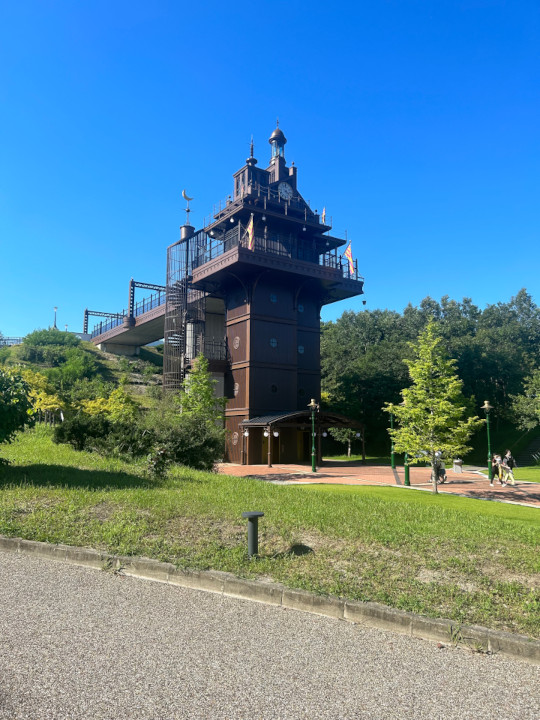 | 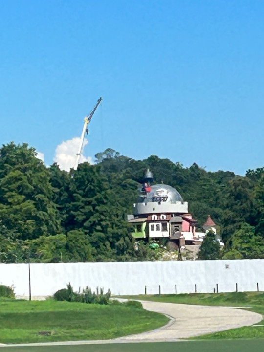 |
|---|---|
| Elevator inspired by Castle in the Sky (apparently…) | Distant view of Howl’s Moving Castle |
But honestly, the surrounding park is pretty cool too! It was built to host world Expo 2005 to demonstrate cutting-edge green technology of the time, and the entire complex oozes that early-2000’s architectural optimism I’ve written about before. If you’re a transit fan, this park is a must-visit for exactly one reason - the Maglev! That’s right, this is the only place (outside of China and Korea) where you can ride a levitating train! The Linimo line may top out at only 62 mph, but it’s still quieter and more compact than a conventional train.
| 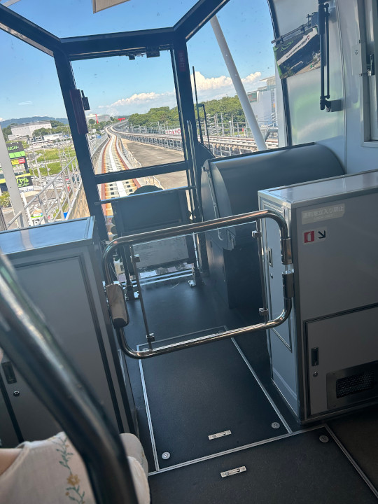 | 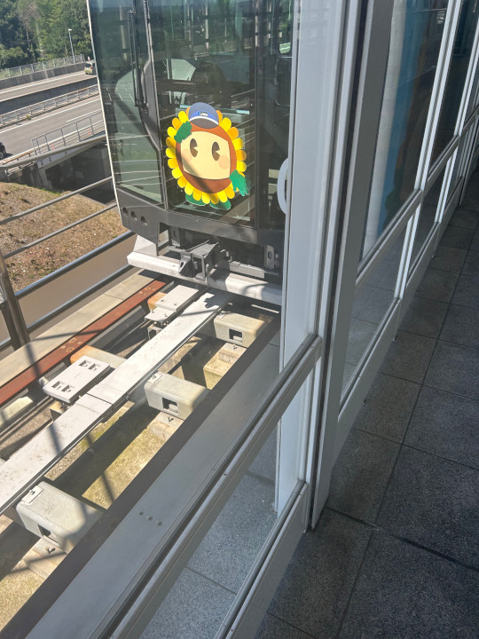 | 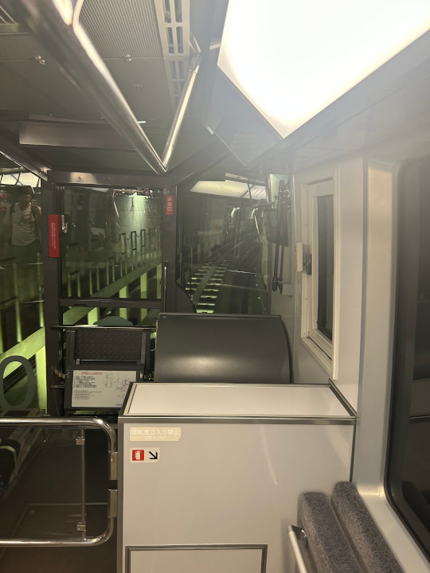 |
|---|---|---|
| Aboveground portion of the Linimo Line | Linimo’s mascot | Underground portion of the Linimo Line |
The tech in the Linimo line will be used in Japan’s next generation SCMaglev, a bullet train that will max out at 375 miles per hour! Nagoya has a museum dedicated to the in-progress maglev project, which I unfortunately haven’t had the chance to visit. But I’ve heard it’s great!
One more stop on this line is the Toyota Automobile Museum. Unlike the industry museum downtown, this museum is laser-focused on the history of the automobile. From the Model T to the Tesla Roadster, witness the evolution of the car through some of the best-restored and most beautiful vehicles I’ve ever seen. It’s not just Japanese cars, either! Another must-visit for car nuts like myself.
| 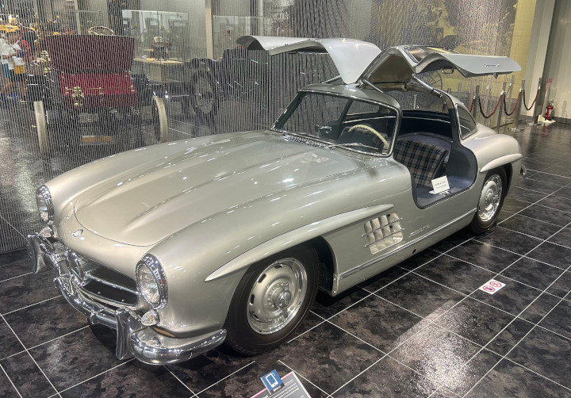 |  |
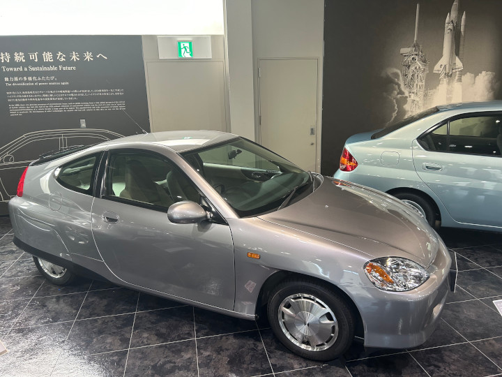 |
|---|---|---|
| ~1957 Mercedes-Benz 300 SL | ~1970 Toyota 2000GT | ~1999 Honda Insight |
Traditional Mountain Village, Tsumago-juku
The sleepy town of Tsumago-juku.
Tsumago-juku’s suspension bridge.
What if you want to tread a little further from the beaten path? My favorite day trip from Nagoya is the sleepy town of Tsumago-juku. Step off of the bus, and you’ll find yourself 400 years back in time. Every building on the main drag has been painstakingly restored to Edo Period architecture and style.
Tsumago-Juku is Japan at a slower pace. It’s the kind of place to take a scenic hike through some castle ruins, sip tea in a mom-and-pop cafe, and chat with friendly locals. Once you’re done for the day, I’d recommend finishing up at one of Nagoya’s many Onsen, or spa-like public hot springs. My fav was Sanno Onsen Kita-no-Yu - it’s massive and has everything from massage chairs to a food court. If you’re worried about etiquette, this Tokyo Cheapo article has just about everything you need to know.
Closing thoughts
Whenever I recommend visiting Nagoya, the question always arises: “OK, but what should I do there?” My answer is always hard to articulate. To me, Nagoya is a collection of small but significant experiences - ogura toast in Hisaya-Odori park, riding a maglev to Ghibli Park, and sampling street food on Osu shopping street. If you’re the type of tourist to blitz through a city’s landmarks in a day, you won’t get much out of Nagoya. But if you want to experience the quirks and idiosyncracies of daily life in Japan, Nagoya delivers in a way tourist-curated cities can’t.
But back to the question this article set out to answer - Is Nagoya Boring? Don’t let me tell you - next time you’re in Japan, pay Nagoya a visit and decide for yourself!2
With some friends at Atsuta Matsuri (festival) When I asked some Nagoyans to take my picture here, they actually laughed at me. Worth it!
-
My hometown of Dallas is infamous for a similar downtown tunnel network. Sakae is a lot better! ↩︎
-
If Nagoya’s already made your itinerary, I cannot recommend Kikuko-san’s Nagoya Homepage enough! She’s compiled an exhaustive list of every festival, matsuri, and event in Nagoya - definitely worth checking out if your trip aligns with the schedule! My favorite was Atsuta Matsuri, which is on June 5th every year. There’s also a Sumo tournament every year in the summer, and plenty of baseball games to check out as well. ↩︎